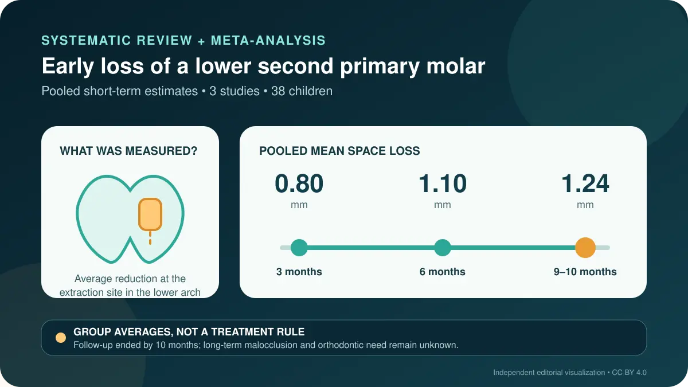

Birinci daimi azısı sürmüş çocuklarda alt ikinci süt azısının erken kaybı, bu sınırlı kanıtta hızlı fakat ortalama düzeyde yer azalmasıyla ilişkiliydi. Sonuç, her çocuğa yer tutucu gerektiğini kanıtlamaz; diş yaşı, çapraşıklık, daimi halefin sürme evresi, molar ilişki, ağız hijyeni ve izlem olanağı ayrı ayrı değerlendirilmelidir.

Bir dakikada ana fikir
Ahmed Kamal El-Motayam, Yousra Mohamed Abdel Rehim, Mais Medhat Sadek ve arkadaşları, ikinci süt azısının erken çekiminden sonraki yer değişimini özel olarak ele alan ilk sistematik derleme ve meta-analizi 30 Ekim 2026'da BMC Oral Health'te yayımladı. Beş veri tabanı ile gri literatür 3 Haziran 2025'e kadar tarandı; dört çalışma nitel senteze, 4–9 yaşlarında toplam 38 çocuğu içeren üç çalışma meta-analize girdi. [1]
Alt çenede çekim boşluğundaki ortalama azalma üçüncü ayda 0,80 mm, altıncı ayda 1,10 mm ve 9–10 ayda 1,24 mm idi. Azalmanın büyük bölümü ilk aylarda oluştu. Ancak çalışma yalnızca kısa dönem boyutsal değişimi ölçtü; bu miktarın ileride gömülü dişe, maloklüzyona ya da daha fazla ortodontik tedavi gereksinimine yol açıp açmadığını bilmiyoruz. [1]
Araştırmacılar hangi verileri birleştirdi?
Temel uygunluk ölçütü, ikinci süt azısının çekilmesi gereken çocukların ileriye dönük izlendiği çalışmalardı. Üç çalışma bölünmüş ağız tasarımı kullandı: çekim yapılan taraf, aynı çocuğun sağlam karşı tarafıyla karşılaştırıldı. Derlemede bir randomize çalışma da vardı; fakat doğal seyri göstermek için yalnızca yer tutucu kullanılmayan kolun verileri alındı. Dolayısıyla birleşik veri özünde gözlemseldi; yer tutucu ile kullanmama arasında randomize bir karşılaştırma değildi. [1]
Protokol, CRD42025640491 numarasıyla PROSPERO'ya önceden kaydedilmişti. İki araştırmacı çalışma seçimini, veri çıkarımını ve ROBINS-I ile yanlılık değerlendirmesini bağımsız yaptı. Üç çalışmada genel yanlılık riski düşük, birinde orta olarak değerlendirildi. Rastgele etkiler modeli kullanıldı; ancak her analizde yalnızca iki ya da üç çalışma bulunduğundan düşük istatistiksel heterojenlik, gerçek klinik homojenliği garanti etmez. [1]
1,24 mm ne anlatıyor, ne anlatmıyor?
Yer kaybı için yüzde 95 güven aralığı üçüncü ayda 0,60–1,00 mm, 9–10 ayda 1,02–1,48 mm idi. Alt çene yarım ark çevresi de altıncı ayda ortalama 1,06 mm azaldı. Yazarlar bu örüntüyü çoğunlukla birinci daimi azının öne doğru hareketiyle açıklıyor; ancak bu mekanizma her çocukta doğrudan ölçülmedi. [1]
Bu ortalama tek bir çocuğa uygulanamaz. Çekim öncesi mevcut yer, çapraşıklık, molar ilişki, daimi küçük azının sürme evresi ve yüz büyümesi, bir milimetrenin klinik önemini değiştirebilir. Ayrıca nicel sonuçlar yalnızca birinci daimi azısı sürmüş çocukların alt çenesi için geçerlidir. Üst çene verisi çok azdı ve güvenilir nicel sonuç çıkarmaya yetmedi. [1]
Yer tutucu gerekir mi?
Meta-analiz yer tutucunun etkisini doğrudan sınamadı ve rutin kullanımı destekleyecek yeterli kanıt sağlamıyor. Amerikan Çocuk Diş Hekimliği Akademisi de süt dişi erken kaybedildiğinde yer korumanın düşünülmesini öneriyor; her çocukta otomatik uygulanmasını değil. Kaybedilen diş, kayıptan beri geçen süre, diş yaşı, oklüzyon, ark yeri, daimi halefin kök gelişimi, sağlık durumu, çocuğun iş birliği ve ağız hijyeni kararı etkiler. [2]
Yer tutucu da risksiz ya da zahmetsiz değildir. Apareyin kırılması veya çıkması, plak birikimi, çürük, yumuşak doku hasarı, istenmeyen diş hareketi ve halef dişin sürmesine müdahale bildirilen sorunlardır. Sabit ya da hareketli aparey, düzenli kontrol, olası onarım ve doğru zamanda çıkarılma gerektirir. Bu nedenle ark değerlendirmesi ve izlem planı olmadan 'takılsın mı, takılmasın mı?' sorusunun tek yanıtı yoktur. [2]
Sınırlılıklar ve kanıt düzeyi
Kanıt tabanı kırılgandır: meta-analizde yalnızca 38 çocuk vardı, izlem 10 ayı aşmadı, yayın yanlılığı incelenemedi ve anlamlı alt grup analizi yapılamadı. Potansiyel olarak uygun dokuz eski raporun tam metnine ulaşılamadı. Başlangıç çapraşıklığı, daimi halefin sürme evresi, komşu dişlerin aşınması, molar ilişki ve büyüme örüntüsü gibi önemli değişkenler birincil çalışmalarda tutarlı biçimde bildirilmedi. [1]
Bölünmüş ağız çalışmalarında aynı çocuğun iki tarafındaki ölçümlerin korelasyonu raporlanmadı ve meta-analize katılamadı; bu nedenle güven aralıkları olduğundan dar görünebilir. Normal büyüme değişimini ayıracak bağımsız bir kontrol grubu da yoktu. Kanıt düzeyi bakımından derleme yöntemsel olarak düzenlidir; kısa dönem yer kaybı miktarı için sonuç öncül, uzun dönem sonuçlar ve yer tutucu etkinliği için ise yetersizdir. [1]
Reçete vermeden pratik mesaj
İkinci süt azısı doğal zamanından önce kaybedilmişse değerlendirmeyi uzun süre ertelemek akılcı değildir; çünkü bildirilen azalmanın çoğu ilk aylarda gerçekleşti. Buna karşın makale otomatik olarak aparey yapılmasını desteklemiyor. Muayene, ark yer analizi, diş yaşı ve gerektiğinde uygun görüntüleme; izlemin, yer korumanın veya ortodontik planlamanın hangisinin daha makul olduğunu belirlemelidir. [1] [2]
Aileler için ana mesaj şudur: Süt dişi geçicidir, fakat koruduğu yer önemli olabilir. Onarılabilir dişi korumak, çürüğü denetlemek ve düzenli kontrole gitmek ilerideki daha karmaşık kararları azaltabilir. Diş zaten kaybedilmişse bu derleme, çocuk diş hekimi veya ortodontistle bilinçli görüşme için bir araçtır; kişisel tanı, gelecekte maloklüzyon garantisi ya da uzaktan tedavi önerisi değildir.
Birincil kaynaklar
BMC Oral Health makalesinin açık erişimli nihai tam metni, yöntemleri, tabloları, yanlılık değerlendirmesi, listelenen ekleri ve sınırlılıkları incelendi. Makale 30 Ekim 2026'da yayımlandı; protokol CRD42025640491 numarasıyla kaydedildi. Klinik bağlam için AAPD'nin resmi kılavuzu incelendi. İnceleme sırasında başlık veya DOI için düzeltme, geri çekme ya da endişe bildirimi görülmedi. Eşlik eden görsel, bildirilen birkaç sayının bağımsız sunumudur; makale şekli değildir.
- El-Motayam AK, Rehim YMA, Sadek MM ve arkadaşları · Alt ikinci süt azısının erken kaybından sonraki yer değişimi: sistematik derleme ve meta-analiz · BMC Oral Health · 30 Ekim 2026 · DOI: 10.1186/s12903-026-10044-8
- American Academy of Pediatric Dentistry · Çocuk diş hekimliğinde gelişen dentisyon ve oklüzyonun yönetimi · Yer koruma bölümü
Bu yazı genel bilgilendirme amaçlıdır; kişiye özel tanı veya tedavinin yerini tutmaz.